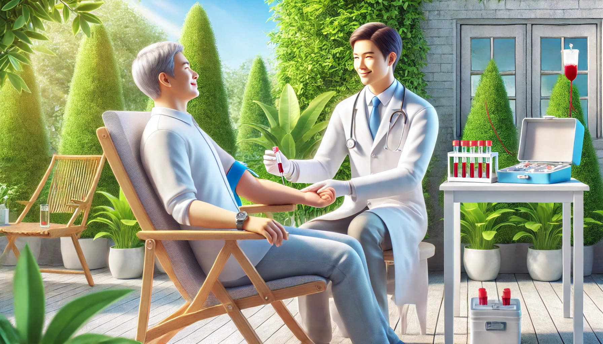

Extracción a domicilio
El servicio de toma de muestra a domicilio cubre toda la ciudad para que las personas con movilidad reducida o con dificultad para trasladarse a nuestra sede pueda recibir su atención.
Atendemos todas las obras sociales.
Envíos de informes por WhatsApp.
Extracciones a domicilio.
Somos un laboratorio de Análisis Clínicos ubicado en Azul, provincia de Buenos Aires con más de cinco décadas de trayectoria al servicio de la salud.
Desde nuestra fundación en 1973, Laboratorio Alvear ha estado comprometido con la mejora continua de la calidad, ofreciendo un servicio de excelencia en los análisis bioquímicos.
Nuestra historia refleja un compromiso continuo con la precisión y calidad en todos los ensayos, así como en la atención personalizada de cada paciente.
Contamos con un equipo de profesionales altamente calificados y en constante actualización, dedicados a proporcionar un servicio de excelencia.
Este esfuerzo es realizado diariamente por todo el equipo de trabajo, con la atención personalizada al público, el control de la calidad analítica y la continua capacitación del personal.
El laboratorio cuenta con profesionales y equipamiento apropiado para brindar precisión y confiabilidad en cada ensayo, asegurando la calidad de los análisis bioquímicos.
Brindamos atención personalizada por nuestros profesionales a cada paciente.
Realizamos extracciones de sangre a domicilio.
Realizamos análisis clínicos y bacteriológicos.
Atendemos todas las obras sociales en convenio con la Federación Bioquímica de la Provincia de Buenos Aires (FABA) y con el Círculo de Analistas Clínicos de Azul.
En caso de atención particular, para conocer el precio de los análisis que debe realizarse, enviar la foto de la orden médica por Whatsapp al 2281-651522 o por mail labalvear54@gmail.com, le brindaremos un presupuesto a la brevedad.
Le recordamos que es recomendable que concurra 24 o 48 hs. antes de la extracción al laboratorio para autorizar las órdenes por Internet.
Laboratorio Alvear, desde su fundación en 1973, está comprometido con la mejora continua de la calidad, ofreciendo un servicio de excelencia en los análisis bioquímicos.
Este esfuerzo es realizado diariamente por todo el equipo de trabajo, con la atención personalizada al público, el control de la calidad analítica y la continua capacitación del personal.
Contamos con un sistema de gestión integrado que nos permite trabajar con tubo único, código de barra y transferencia electrónica de datos, lo que garantiza la trazabilidad de las muestras, asegura máxima confiabilidad en los resultados y tiempos óptimos de entrega de los mismos.
El servicio de toma de muestra a domicilio cubre toda la ciudad para que las personas con movilidad reducida o con dificultad para trasladarse a nuestra sede pueda recibir su atención.
Nuestros profesionales están capacitados para la atención pediátrica. Nuestro objetivo es que el niño se sienta contenido de manera que pueda recordar la experiencia de la forma más positiva posible.
Puede pedir al laboratorio el envío del informe por WA o por mail.
Cada estudio implica una preparación en particular, y en algunos casos, un horario especial. Esta información debe solicitarla al laboratorio. Prepararse de manera adecuada es importante para que el resultado y su interpretación sean confiables, de otra manera pueden resultar incorrectos o dudosos, o no podrá realizarse el análisis.
Se recomienda ayuno de 8 a 12 horas. Solo se permite tomar agua.
Ayuno de 8 horas. La prueba dura entre 2 y 3 horas, durante las cuales deberá permanecer en el laboratorio.
Recolectar la primera orina de la mañana en un frasco estéril que puede adquirir en una farmacia.
Atendemos todas las Obras Sociales en convenio con la Federación Bioquímica de la Provincia de Buenos Aires (FABA) y con el Círculo de Analistas Clínicos de Azul.
Requisitos para su atención:
Para consultas relacionadas, comuníquese por Whatsapp al 2281-651522